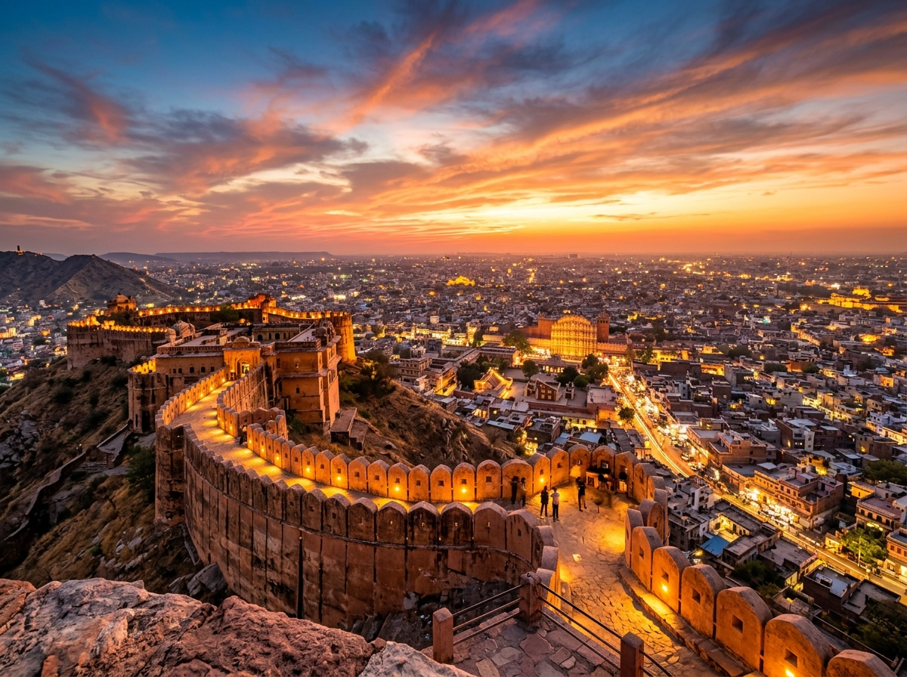
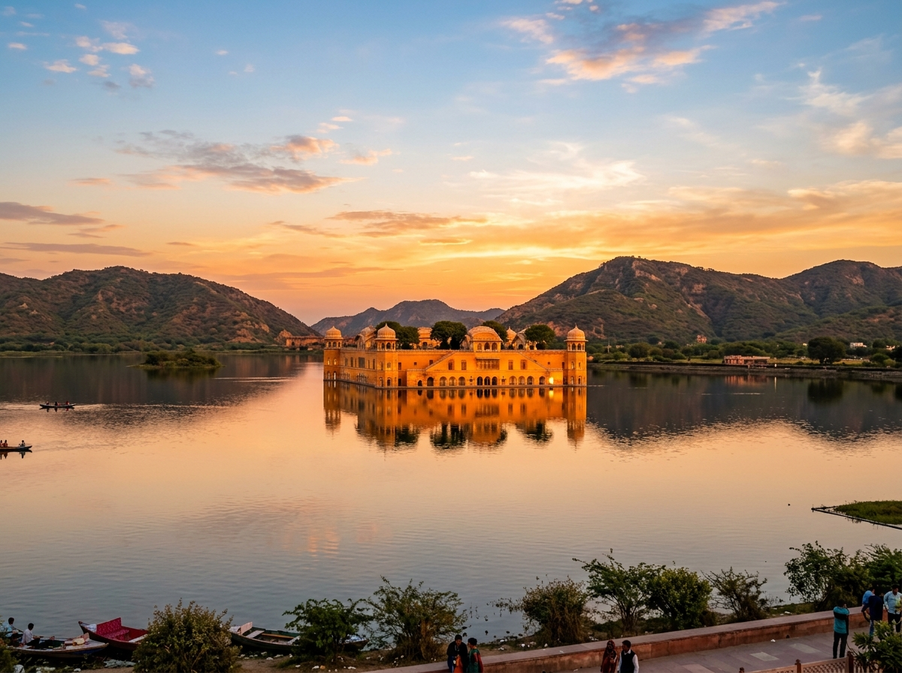

Day-by-Day Details
Your complete daily guide.
Pink City & Royal Jaipur
Hawa Mahal, City Palace, Jantar Mantar, Johari Bazaar
Hawa Mahal
Photograph the iconic façade and explore the surrounding old-city streets. Allow 30–60 minutes.
City Palace & Jantar Mantar
Explore royal residences, courtyards, decorative gates, and the 19 astronomical instruments (UNESCO Site). Allow 2.5–3 hours.
Lunch — Old City / MI Road
Try dal baati churma, Rajasthani thali, gatte ki sabzi, ker sangri, chaas.
Old City Walk
Rajasthani Dinner
Traditional thali rather than generic North Indian. Optional night drive through illuminated Pink City.
Pro-Tip: Keep this day mostly walkable and avoid unnecessary long-distance travel. Don't rush the markets!
Amer & The Forts
Amer Fort, Panna Meena ka Kund, Jaigarh, Jal Mahal
Head to Amer
~11 km from central Jaipur. Start early to beat heat and crowds.
Amer Fort Complex
Jaleb Chowk, Diwan-i-Aam, Sheesh Mahal, Ganesh Pol, gardens. Allow 2.5–3 hours.
Panna Meena ka Kund
Historic stepwell near Amer. 30–45 minutes.
Jaigarh Fort
Fort walls, massive cannon, hilltop views, water-storage system. 1.5–2 hours.
Jal Mahal
Lakeside photo stop on the way back. 30–45 minutes.
Rooftop Dinner
Try a rooftop restaurant or traditional Rajasthani restaurant.
Pro-Tip: Amer + Jaigarh are priorities. Don't add five more monuments just because they appear close on a map.

Nahargarh, Gaitore & Museums
Mix of outdoor sightseeing and indoor attractions to avoid burnout.
Nahargarh Fort
Jaipur city views, fort architecture, photography, Madhavendra Bhawan. ~2 hours.
Gaitore Ki Chhatriyan
Royal cenotaphs. Quieter than major forts. 45–60 minutes.
Albert Hall Museum
Works well on hot/rainy days. 1.5–2 hours.
Birla Mandir
Visit around sunset/evening. ~45 minutes.
Pro-Tip: This day deliberately mixes outdoor and indoor attractions so you do not burn out.

Culture, Food & Shopping
Intentionally less aggressive — food + shopping + culture.
Patrika Gate
Photography. 30–45 minutes.
Local Market & Handicrafts
Rajasthani Lunch
Make this the main food experience. Dal baati churma, gatte, ker sangri, bajra roti.
Hotel Rest
Take a proper break. Important for a 5-day trip.
Pink City Evening
Explore old city markets at a slower pace. Final shopping and relaxed dinner.

Flexible Final Day
Option A — Relaxed Jaipur Day
Revisit a market, buy souvenirs, café, lunch, visit one remaining attraction. Depart evening.
Option B — Abhaneri Stepwell
Leave 7 AM → Abhaneri 9 AM → explore → return 2 PM → shopping/rest → depart evening.
Option C — Pushkar Day Trip
~145 km from Jaipur. Travel-heavy — choose only if you specifically want Pushkar.